5 一般化加法モデル (GAM)
二つのパッケージgamおよびmgcvは, 同一名の関数gam(), s()を持つ. これらは, 同じ名前ながら指定できるパラメータが互いに異なっているため,
二つのライブラリを同時に読み込むことで,
プログラムの一部が正常に動作しなくなる可能性がある.
そこで, 例えば, パッケージgamの関数gam()であれば,
gam::gam()等と指定するなどの対応が取り得るが,
機能に重複があることから,
両方同時ではなく, どちから一方のみをロードし使うのが
安全であろう.
こだわりがなければ, より多様な機能を有する
mgcvに限定して使用して良いと思われる
- パッケージ
mgcvの方のgam()関数は, 予測変数間の交互作用をモデルに 取り入れられるなど柔軟性に富む. s()関数は,多様な平滑化項を指定することができる.
5.1 パッケージgamの利用
関数gam():
- 加法予測子のシンボリック表現や誤差分布を指定の上でGAMをフィット
- バックフィッティング・アルゴリズムを採用 (異なる平滑化やフィッティングの方法を混ぜる)
- 局所回帰や平滑化スプラインをサポート
- usage:
gam(formula, family = gaussian, data, weights, subset, na.action,
start, etastart, mustart, control = gam.control(...),
model = TRUE, method, x = FALSE, y = TRUE, ...)本セクションの出所: ISLR, Ch.7 (pp.287–)
library(ISLR) # Wage
head(Wage)
#> year age maritl race education region
#> 231655 2006 18 1. Never Married 1. White 1. < HS Grad 2. Middle Atlantic
#> 86582 2004 24 1. Never Married 1. White 4. College Grad 2. Middle Atlantic
#> 161300 2003 45 2. Married 1. White 3. Some College 2. Middle Atlantic
#> 155159 2003 43 2. Married 3. Asian 4. College Grad 2. Middle Atlantic
#> 11443 2005 50 4. Divorced 1. White 2. HS Grad 2. Middle Atlantic
#> 376662 2008 54 2. Married 1. White 4. College Grad 2. Middle Atlantic
#> jobclass health health_ins logwage wage
#> 231655 1. Industrial 1. <=Good 2. No 4.318063 75.04315
#> 86582 2. Information 2. >=Very Good 2. No 4.255273 70.47602
#> 161300 1. Industrial 1. <=Good 1. Yes 4.875061 130.98218
#> 155159 2. Information 2. >=Very Good 1. Yes 5.041393 154.68529
#> 11443 2. Information 1. <=Good 1. Yes 4.318063 75.04315
#> 376662 2. Information 2. >=Very Good 1. Yes 4.845098 127.11574Wage: 東海岸賃金データ (Mid-Atlantic Wage Data)
- 東海岸地域 (Mid-Atlantic region) 3000人の男性労働者の賃金その他のデータ.
- year 賃金情報の記録年
- age 労働者の年齢
- maritl 婚姻状況 (因子): 1.未婚, 2. 既婚, 3. 配偶者死別, 4. 離婚 5. 別居
- race 人種 (因子): 1. 白人, 2. 黒人, 3. アジア人, 4. その他
- education 教育水準 (因子): 1. 高校未卒業, 2. 高卒, 3. 大学中退 (課程の一部を修了), 4. 学部卒, 5. 院卒
- region 国の地域（東海岸のみ）
- jobclass 職種 (因子): 1. 産業, 2. 情報
- health 健康状態 (因子): 1. 良好以下, 2. 非常に良好以上
- health_ins 健康保険の有無 (因子): 1. あり, 2. なし
- logwage 労働者の賃金の対数
- wage 労働者の賃金 (名目)多項式回帰
参考: ISLR, 7.8.1
※以下の多項式回帰部分は, 既に配布したものと重複.
fit_lm <- lm(wage ~ poly(age, 4), data = Wage) # 4次の直交多項式
head(poly(Wage$age, 4)) # 4次の多項式
#> 1 2 3 4
#> [1,] -0.0386247992 0.055908727 -0.0717405794 0.086729854
#> [2,] -0.0291326034 0.026298066 -0.0145499511 -0.002599280
#> [3,] 0.0040900817 -0.014506548 -0.0001331835 0.014480093
#> [4,] 0.0009260164 -0.014831404 0.0045136682 0.012657507
#> [5,] 0.0120002448 -0.009815846 -0.0111366263 0.010211456
#> [6,] 0.0183283753 -0.002073906 -0.0166282799 -0.001314381
coef(summary(fit_lm))
#> Estimate Std. Error t value Pr(>|t|)
#> (Intercept) 111.70361 0.7287409 153.283015 0.000000e+00
#> poly(age, 4)1 447.06785 39.9147851 11.200558 1.484604e-28
#> poly(age, 4)2 -478.31581 39.9147851 -11.983424 2.355831e-32
#> poly(age, 4)3 125.52169 39.9147851 3.144742 1.678622e-03
#> poly(age, 4)4 -77.91118 39.9147851 -1.951938 5.103865e-02
fit_lm <- lm(wage ~ poly(age, 4, raw = T), data = Wage) # 非直交化
head(poly(Wage$age, 4, raw = T)) # 4次の多項式
#> 1 2 3 4
#> [1,] 18 324 5832 104976
#> [2,] 24 576 13824 331776
#> [3,] 45 2025 91125 4100625
#> [4,] 43 1849 79507 3418801
#> [5,] 50 2500 125000 6250000
#> [6,] 54 2916 157464 8503056
coef(summary(fit_lm))
#> Estimate Std. Error t value Pr(>|t|)
#> (Intercept) -1.841542e+02 6.004038e+01 -3.067172 0.0021802539
#> poly(age, 4, raw = T)1 2.124552e+01 5.886748e+00 3.609042 0.0003123618
#> poly(age, 4, raw = T)2 -5.638593e-01 2.061083e-01 -2.735743 0.0062606446
#> poly(age, 4, raw = T)3 6.810688e-03 3.065931e-03 2.221409 0.0263977518
#> poly(age, 4, raw = T)4 -3.203830e-05 1.641359e-05 -1.951938 0.0510386498スプライン適合
参考: ISLR 7.8.2
agelims <- range(Wage$age)
age_grid <- seq(from = agelims[1], to = agelims[2])
library(splines)
# B-スプライン
fit_sp <- lm(wage ~ bs(age, knots = c(25, 40, 60)), data = Wage) # bs: B-スプライン
pred_sp <- predict(fit_sp, newdata = list(age = age_grid), se = T)
plot(Wage$age, Wage$wage, col = "grey")
lines(age_grid, pred_sp$fit, lw = 2)
lines(age_grid, pred_sp$fit + 2 * pred_sp$se, lty = "dashed")
lines(age_grid, pred_sp$fit - 2 * pred_sp$se, lty = "dashed")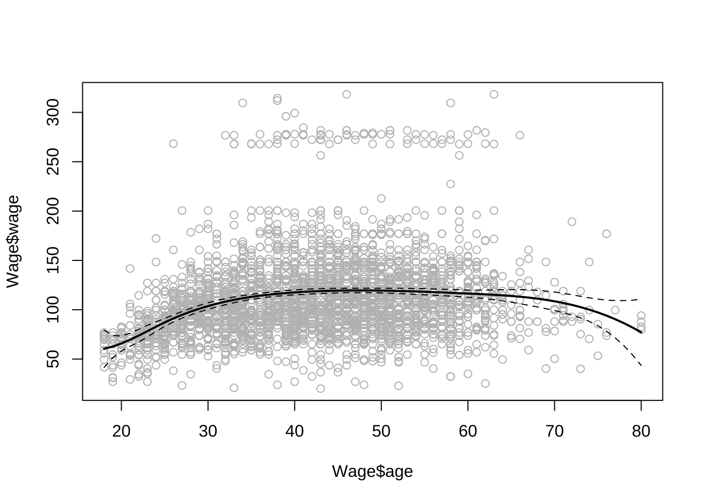
# 自然スプライン
fit_sp2 <- lm(wage ~ ns(age, df = 4), data = Wage) # ns: 自然スプライン(4次)
pred_sp2 <- predict(fit_sp2, newdata = list(age = age_grid), se = T)
plot(Wage$age, Wage$wage, col = "grey")
lines(age_grid, pred_sp2$fit, lw = 2)
lines(age_grid, pred_sp2$fit + 2 * pred_sp2$se, lty = "dashed")
lines(age_grid, pred_sp2$fit - 2 * pred_sp2$se, lty = "dashed")# 平滑化スプライン
plot(Wage$age, Wage$wage, xlim = agelims, cex = 0.5, col = "darkgrey")
fit_sp3 <- smooth.spline(Wage$age, Wage$wage, df = 16) # 平滑化スプライン(自由度 = 16)
fit_sp4 <- smooth.spline(Wage$age, Wage$wage, cv = T) # 同 (交差検証により自由度選択)
fit_sp4$df
#> [1] 6.794596
pred_sp2 <- predict(fit_sp2, newdata = list(age = age_grid), se = T)
lines(fit_sp3, col = "orange", lw = 2)
lines(fit_sp4, col = "lightblue", lw = 2)
legend("topright", legend = c("16 DF", "6.8 DF"), col = c("orange", "lightblue"),
lty = 1, lwd = 2, cex = 0.8)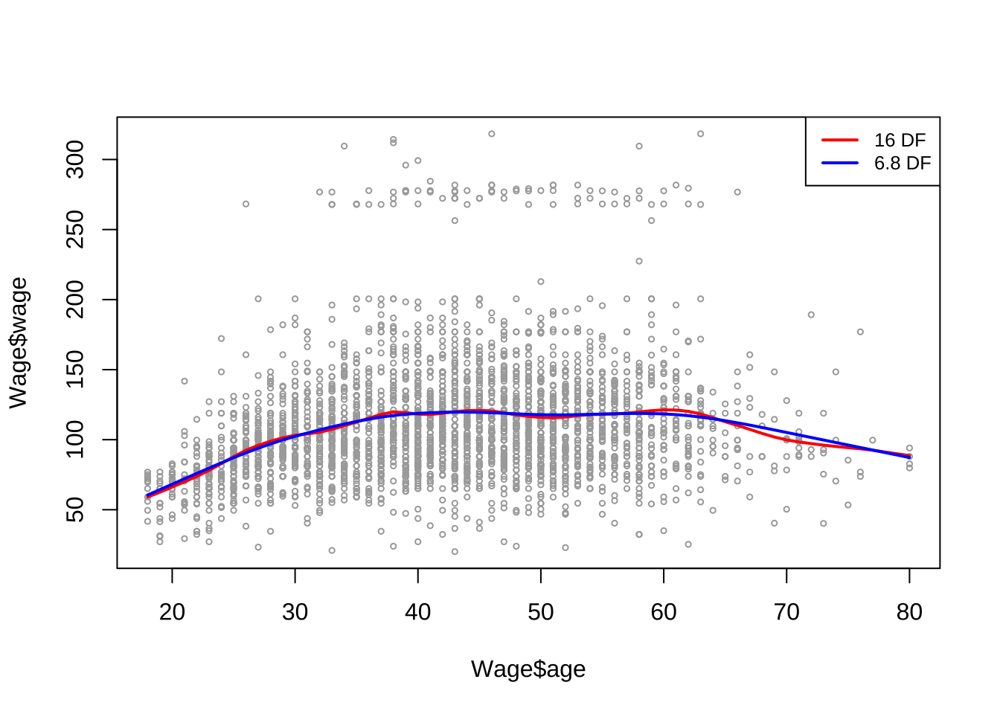
GAM
参考: ISLR 7.8.3
# lmの実行
fit_gam1 <- lm(wage ~ ns(year, 4) + ns(age, 5) + education, data = Wage)
# ns: natural cubic splineの(Bスプライン)基底行列生成
summary(fit_gam1)
#>
#> Call:
#> lm(formula = wage ~ ns(year, 4) + ns(age, 5) + education, data = Wage)
#>
#> Residuals:
#> Min 1Q Median 3Q Max
#> -120.513 -19.608 -3.583 14.112 214.535
#>
#> Coefficients:
#> Estimate Std. Error t value Pr(>|t|)
#> (Intercept) 46.949 4.704 9.980 < 2e-16 ***
#> ns(year, 4)1 8.625 3.466 2.488 0.01289 *
#> ns(year, 4)2 3.762 2.959 1.271 0.20369
#> ns(year, 4)3 8.127 4.211 1.930 0.05375 .
#> ns(year, 4)4 6.806 2.397 2.840 0.00455 **
#> ns(age, 5)1 45.170 4.193 10.771 < 2e-16 ***
#> ns(age, 5)2 38.450 5.076 7.575 4.78e-14 ***
#> ns(age, 5)3 34.239 4.383 7.813 7.69e-15 ***
#> ns(age, 5)4 48.678 10.572 4.605 4.31e-06 ***
#> ns(age, 5)5 6.557 8.367 0.784 0.43328
#> education2. HS Grad 10.983 2.430 4.520 6.43e-06 ***
#> education3. Some College 23.473 2.562 9.163 < 2e-16 ***
#> education4. College Grad 38.314 2.547 15.042 < 2e-16 ***
#> education5. Advanced Degree 62.554 2.761 22.654 < 2e-16 ***
#> ---
#> Signif. codes: 0 '***' 0.001 '**' 0.01 '*' 0.05 '.' 0.1 ' ' 1
#>
#> Residual standard error: 35.16 on 2986 degrees of freedom
#> Multiple R-squared: 0.293, Adjusted R-squared: 0.2899
#> F-statistic: 95.2 on 13 and 2986 DF, p-value: < 2.2e-16
par(mfrow = c(1, 2))
plot(fit_gam1, se = TRUE, col = "orange")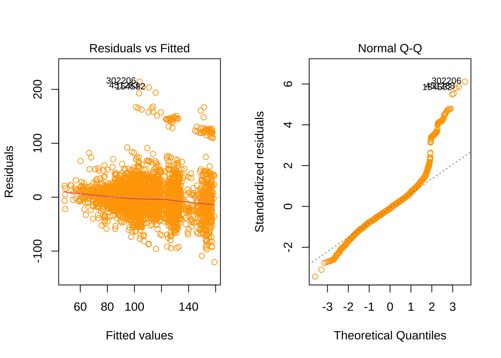
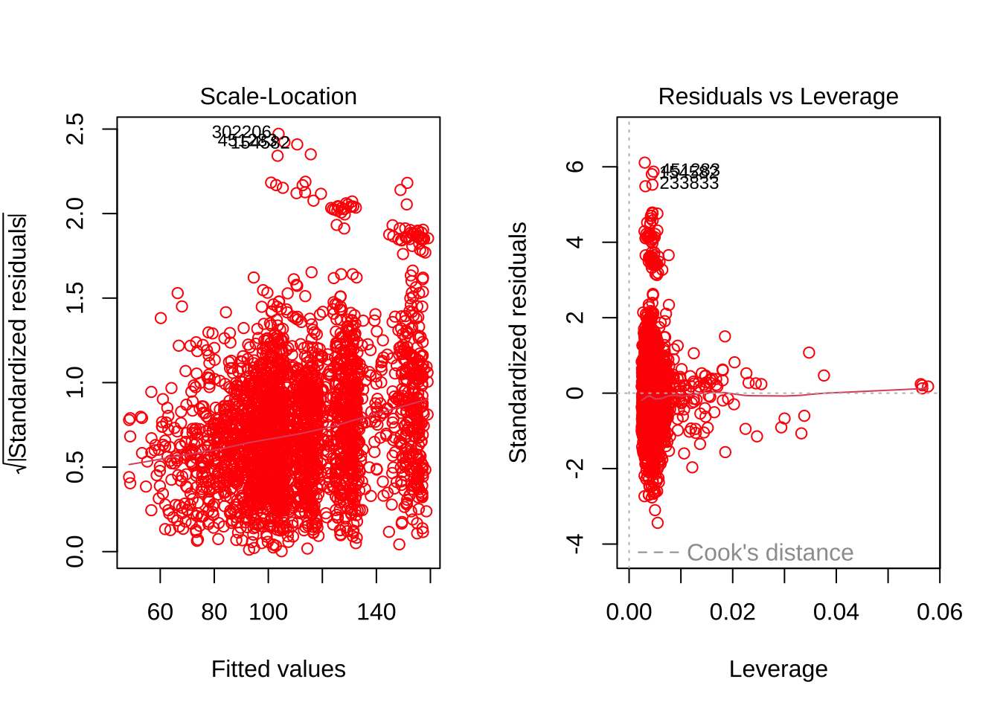
# GAM
fit_gam3 <- gam::gam(wage ~ gam::s(year, 4) + gam::s(age, 5) + education, data = Wage)
# s: 平滑化スプライン head(gam::s(Wage$age, 5))
summary(fit_gam3) # --> ANOVA
#>
#> Call: gam::gam(formula = wage ~ gam::s(year, 4) + gam::s(age, 5) +
#> education, data = Wage)
#> Deviance Residuals:
#> Min 1Q Median 3Q Max
#> -113.323 -19.521 -3.964 14.438 219.172
#>
#> (Dispersion Parameter for gaussian family taken to be 1287.767)
#>
#> Null Deviance: 5222086 on 2999 degrees of freedom
#> Residual Deviance: 3854286 on 2993 degrees of freedom
#> AIC: 30004.62
#>
#> Number of Local Scoring Iterations: 2
#>
#> Anova for Parametric Effects
#> Df Sum Sq Mean Sq F value Pr(>F)
#> gam::s(year, 4) 1 22434 22434 17.421 3.08e-05 ***
#> gam::s(age, 5) 1 195045 195045 151.460 < 2.2e-16 ***
#> education 4 1150320 287580 223.317 < 2.2e-16 ***
#> Residuals 2993 3854286 1288
#> ---
#> Signif. codes: 0 '***' 0.001 '**' 0.01 '*' 0.05 '.' 0.1 ' ' 1
par(mfrow = c(1, 3))
plot(fit_gam3, se = TRUE, col = "lightblue")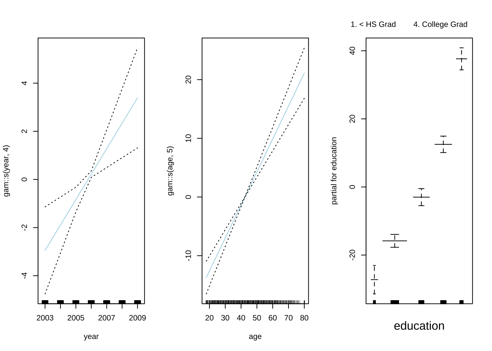
fit_gam1 <- gam::gam(wage ~ gam::s(age, 5) + education, data = Wage)
fit_gam2 <- gam::gam(wage ~ year + gam::s(age, 5) + education, data = Wage)
anova(fit_gam1, fit_gam2, fit_gam3, test = "F")
#> Analysis of Deviance Table
#>
#> Model 1: wage ~ gam::s(age, 5) + education
#> Model 2: wage ~ year + gam::s(age, 5) + education
#> Model 3: wage ~ gam::s(year, 4) + gam::s(age, 5) + education
#> Resid. Df Resid. Dev Df Deviance F Pr(>F)
#> 1 2994 3867992
#> 2 2993 3854286 1 13706 10.643 0.001117 **
#> 3 2993 3854286 0 0
#> ---
#> Signif. codes: 0 '***' 0.001 '**' 0.01 '*' 0.05 '.' 0.1 ' ' 1
AIC(fit_gam1, fit_gam2, fit_gam3)
#> df AIC
#> fit_gam1 7 30013.27
#> fit_gam2 8 30004.62
#> fit_gam3 8 30004.62# ISLRの修正: preplot.Gam → preplot
tmp <- preplot(fit_gam2, terms = labels(fit_gam2))
age_sm <- cbind(tmp$`gam::s(age, 5)`$x, tmp$`gam::s(age, 5)`$y)
age_sm_uniq <- unique(age_sm[order(age_sm[, 1]), ])
plot(age_sm_uniq, type = "l", xlab = "age", ylab = "s(age, 5)")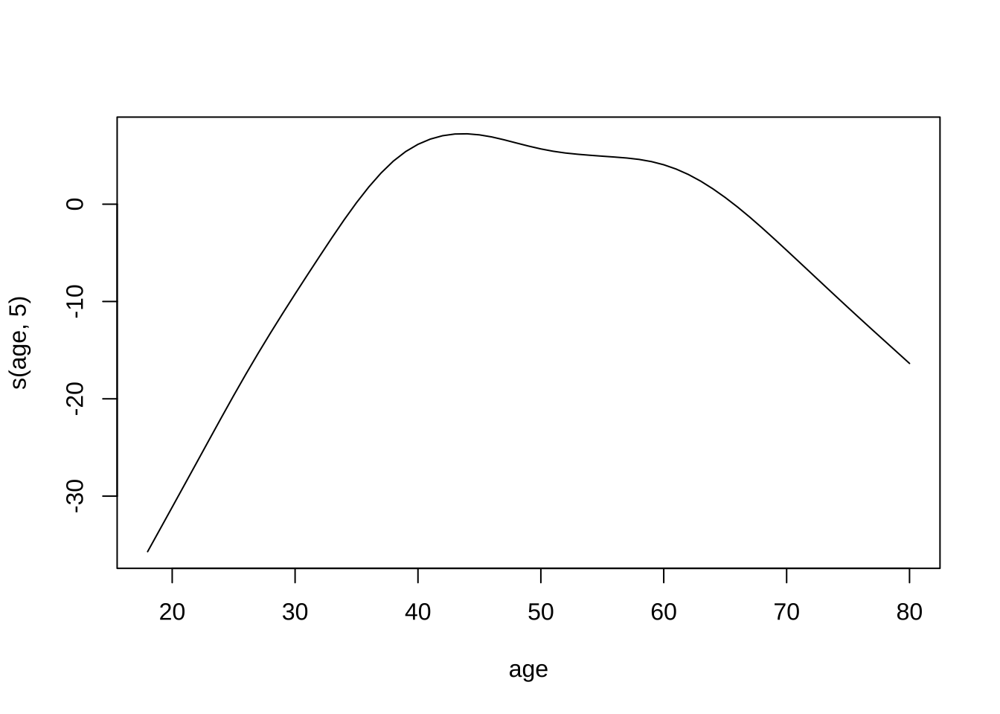
5.2 パッケージmgcvの利用
交互作用項を含んだGAMを扱いたい場合.
ライブラリmgcv, 関数gam()
- Generalized additive models with integrated smoothness estimation
- usage:
gam(formula, family = gaussian(), data = list(), weights = NULL,
subset = NULL, na.action, offset = NULL, method = "GCV.Cp",
optimizer = c("outer", "newton"), control = list(), scale = 0,
select = FALSE, knots = NULL, sp = NULL, min.sp = NULL, H = NULL,
gamma = 1, fit = TRUE, paraPen = NULL, G = NULL, in.out,
drop.unused.levels = TRUE, drop.intercept = NULL, discrete = FALSE, ...)
- 参考サイト: https://cran.r-project.org/web/packages/mgcv/mgcv.pdffit_lm <- lm(medv ~ tax + crim + age + ptratio + nox + ptratio + dis, data = Boston)
summary(fit_lm)
#>
#> Call:
#> lm(formula = medv ~ tax + crim + age + ptratio + nox + ptratio +
#> dis, data = Boston)
#>
#> Residuals:
#> Min 1Q Median 3Q Max
#> -13.111 -4.661 -1.301 2.431 32.135
#>
#> Coefficients:
#> Estimate Std. Error t value Pr(>|t|)
#> (Intercept) 8.609e+01 4.480e+00 19.217 < 2e-16 ***
#> tax 2.793e-04 3.023e-03 0.092 0.92641
#> crim -1.754e-01 4.448e-02 -3.944 9.15e-05 ***
#> age -5.282e-02 1.800e-02 -2.935 0.00349 **
#> ptratio -1.794e+00 1.669e-01 -10.751 < 2e-16 ***
#> nox -3.610e+01 5.188e+00 -6.960 1.08e-11 ***
#> dis -1.654e+00 2.549e-01 -6.488 2.10e-10 ***
#> ---
#> Signif. codes: 0 '***' 0.001 '**' 0.01 '*' 0.05 '.' 0.1 ' ' 1
#>
#> Residual standard error: 6.946 on 499 degrees of freedom
#> Multiple R-squared: 0.4365, Adjusted R-squared: 0.4297
#> F-statistic: 64.42 on 6 and 499 DF, p-value: < 2.2e-16fit_gam <- mgcv::gam(medv ~ s(tax) + s(crim) + s(age) + s(ptratio) + s(nox) + s(dis),
data = Boston)
plot(fit_gam, residuals = T, pch = 1, se = T, cex.lab = 1.3)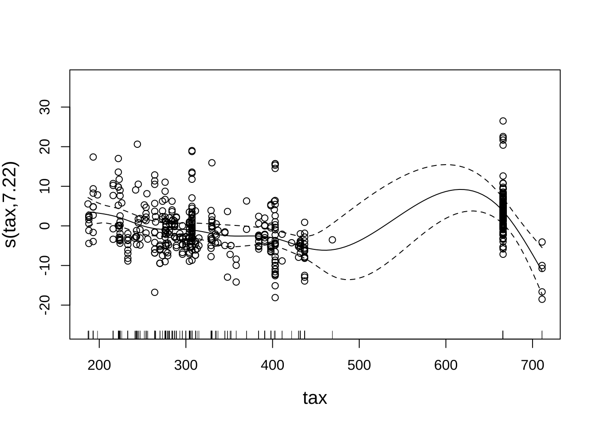
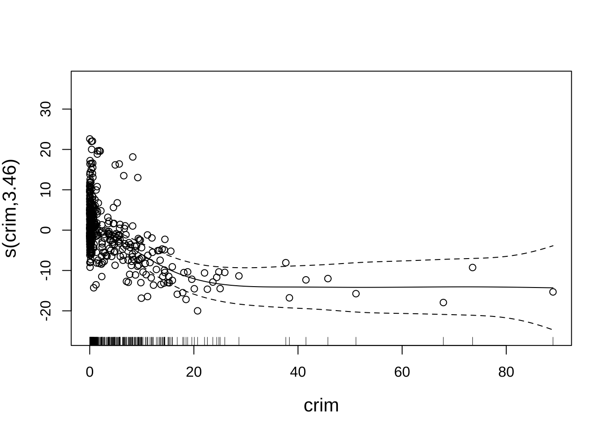
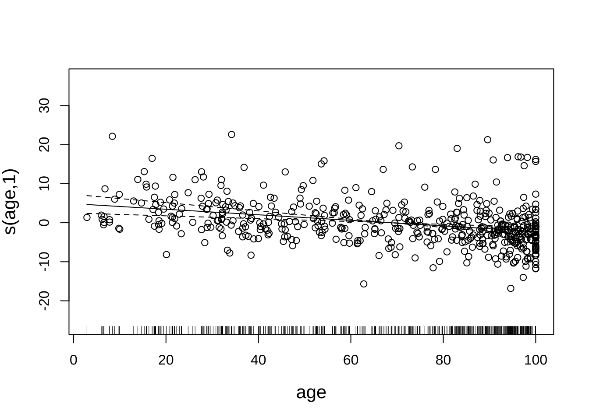
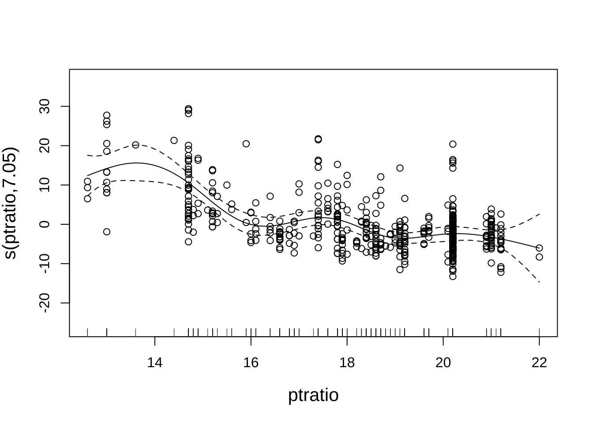
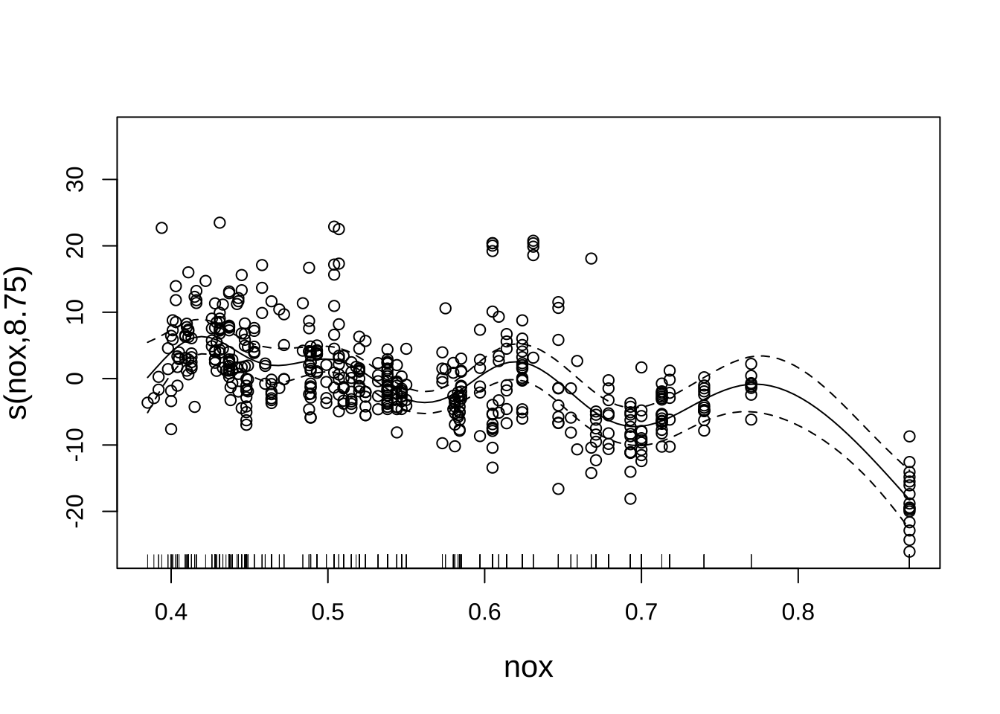
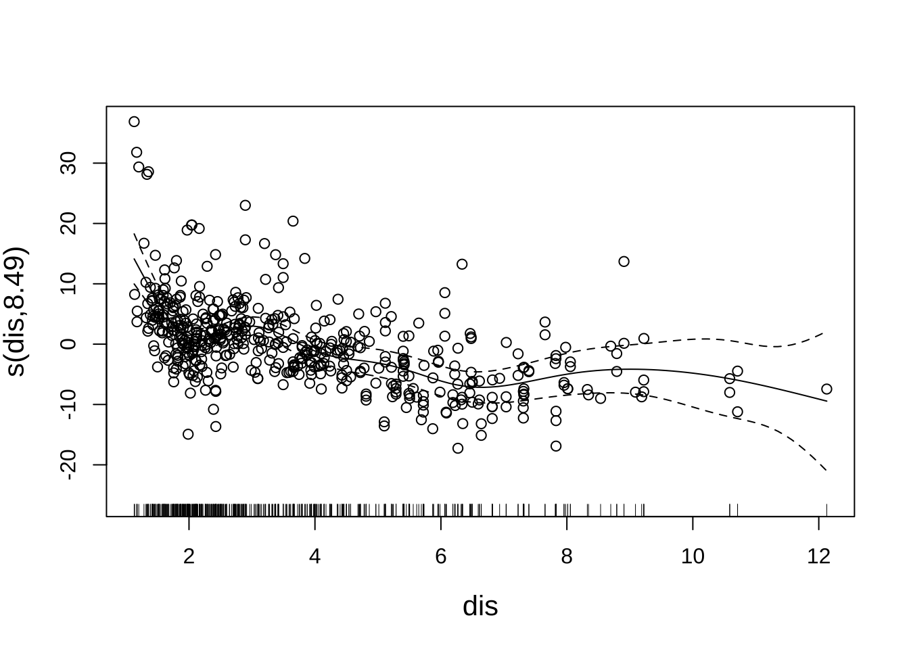
# 交互作用を含めたGAM
fit_gam <- mgcv::gam(medv ~ s(ptratio) + s(rm) + s(ptratio, rm), data = Boston)
vis.gam(fit_gam, color = "topo", theta = 50)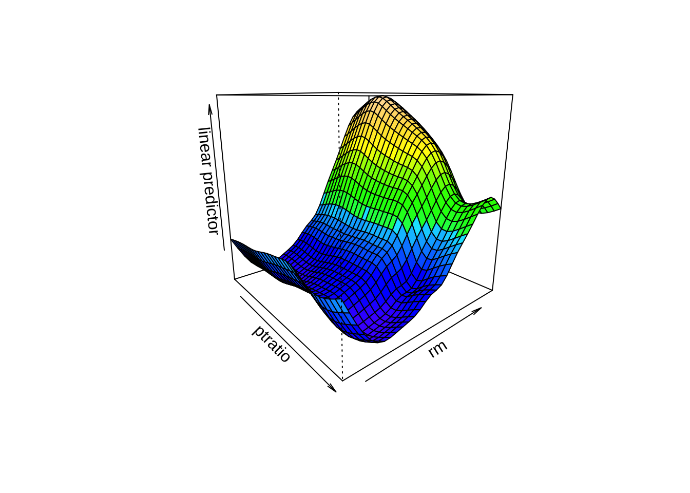
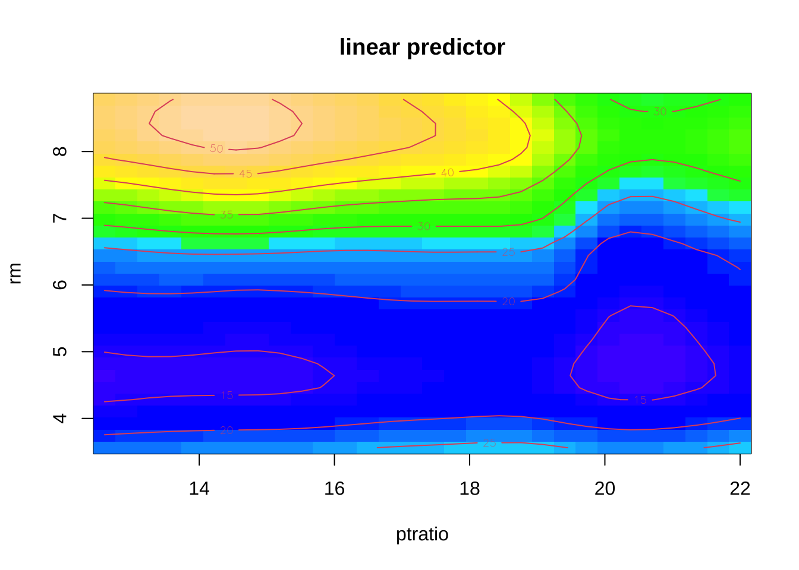
# --> ptratioとrmのheatmap
summary(fit_gam)
#>
#> Family: gaussian
#> Link function: identity
#>
#> Formula:
#> medv ~ s(ptratio) + s(rm) + s(ptratio, rm)
#>
#> Parametric coefficients:
#> Estimate Std. Error t value Pr(>|t|)
#> (Intercept) 22.5328 0.2277 98.94 <2e-16 ***
#> ---
#> Signif. codes: 0 '***' 0.001 '**' 0.01 '*' 0.05 '.' 0.1 ' ' 1
#>
#> Approximate significance of smooth terms:
#> edf Ref.df F p-value
#> s(ptratio) 3.596 4.016 0.466 0.747
#> s(rm) 7.200 8.174 6.460 <2e-16 ***
#> s(ptratio,rm) 10.595 27.000 1.668 <2e-16 ***
#> ---
#> Signif. codes: 0 '***' 0.001 '**' 0.01 '*' 0.05 '.' 0.1 ' ' 1
#>
#> R-sq.(adj) = 0.69 Deviance explained = 70.3%
#> GCV = 27.457 Scale est. = 26.242 n = 506fit_gam0 <- mgcv::gam(medv ~ s(ptratio) + s(rm), data = Boston)
summary(fit_gam0)
#>
#> Family: gaussian
#> Link function: identity
#>
#> Formula:
#> medv ~ s(ptratio) + s(rm)
#>
#> Parametric coefficients:
#> Estimate Std. Error t value Pr(>|t|)
#> (Intercept) 22.5328 0.2363 95.34 <2e-16 ***
#> ---
#> Signif. codes: 0 '***' 0.001 '**' 0.01 '*' 0.05 '.' 0.1 ' ' 1
#>
#> Approximate significance of smooth terms:
#> edf Ref.df F p-value
#> s(ptratio) 6.312 7.357 16.21 <2e-16 ***
#> s(rm) 8.047 8.759 61.38 <2e-16 ***
#> ---
#> Signif. codes: 0 '***' 0.001 '**' 0.01 '*' 0.05 '.' 0.1 ' ' 1
#>
#> R-sq.(adj) = 0.666 Deviance explained = 67.5%
#> GCV = 29.149 Scale est. = 28.264 n = 506
anova(fit_gam, fit_gam0) # 注) test = 'F'/'Chisq'は機能しない (5/12/23)
#> Analysis of Deviance Table
#>
#> Model 1: medv ~ s(ptratio) + s(rm) + s(ptratio, rm)
#> Model 2: medv ~ s(ptratio) + s(rm)
#> Resid. Df Resid. Dev Df Deviance
#> 1 478.40 12691
#> 2 488.88 13867 -10.485 -1176.7
AIC(fit_gam, fit_gam0)
#> df AIC
#> fit_gam 23.39062 3113.127
#> fit_gam0 16.35950 3143.9305.3 パッケージprophetの利用
時系列予測を目的とした関数および補助関数のパッケージ.
prophet:
- 非線形のトレンドに年次・週次・日次の季節性, さらに 休日効果を加えた加法モデルに基づいて時系列データを予測
- 強い季節性があり, 数シーズンの過去データを持つ時系列データに対して良く機能
- 欠損値やトレンドのシフトに対して頑強. 通常, 外れ値をうまく処理
- 出所: https://facebook.github.io/prophet/docs/quick_start.html#r-apiair <- AirPassengers
# Pan Am, # international passenger bokking (in 1000s) per month 1949--1960
# (Brown, 1963)
class(air)
#> [1] "ts"
air
#> Jan Feb Mar Apr May Jun Jul Aug Sep Oct Nov Dec
#> 1949 112 118 132 129 121 135 148 148 136 119 104 118
#> 1950 115 126 141 135 125 149 170 170 158 133 114 140
#> 1951 145 150 178 163 172 178 199 199 184 162 146 166
#> 1952 171 180 193 181 183 218 230 242 209 191 172 194
#> 1953 196 196 236 235 229 243 264 272 237 211 180 201
#> 1954 204 188 235 227 234 264 302 293 259 229 203 229
#> 1955 242 233 267 269 270 315 364 347 312 274 237 278
#> 1956 284 277 317 313 318 374 413 405 355 306 271 306
#> 1957 315 301 356 348 355 422 465 467 404 347 305 336
#> 1958 340 318 362 348 363 435 491 505 404 359 310 337
#> 1959 360 342 406 396 420 472 548 559 463 407 362 405
#> 1960 417 391 419 461 472 535 622 606 508 461 390 432
# ここでは, 生データのまま使用 (対数変換せず)# 年月の取り出し
tt <- as.Date(yearmon(index(air)))
# prophetモデルの生成
air_df <- data.frame(ds = tt, y = air)
air_ppht <- prophet(air_df)
# 予測年月の生成
dates_ft <- make_future_dataframe(air_ppht, periods = 12, freq = "month")
tail(dates_ft)
#> ds
#> 151 1961-07-01
#> 152 1961-08-01
#> 153 1961-09-01
#> 154 1961-10-01
#> 155 1961-11-01
#> 156 1961-12-01
# 予測値の生成
air_forecast <- predict(air_ppht, dates_ft)
tail(air_forecast[c("ds", "yhat", "yhat_lower", "yhat_upper")])
#> ds yhat yhat_lower yhat_upper
#> 151 1961-07-01 576.8046 547.7428 608.3612
#> 152 1961-08-01 577.2261 546.3899 605.4894
#> 153 1961-09-01 528.6678 499.9030 557.1742
#> 154 1961-10-01 493.5023 463.4183 522.9514
#> 155 1961-11-01 459.6479 432.0263 487.2594
#> 156 1961-12-01 489.0093 460.8218 517.5322
str(air_forecast)
#> 'data.frame': 156 obs. of 16 variables:
#> $ ds : POSIXct, format: "1949-01-01" "1949-02-01" ...
#> $ trend : num 107 109 111 114 116 ...
#> $ additive_terms : num -21.433 -30.103 -0.467 -4.937 -3.629 ...
#> $ additive_terms_lower : num -21.433 -30.103 -0.467 -4.937 -3.629 ...
#> $ additive_terms_upper : num -21.433 -30.103 -0.467 -4.937 -3.629 ...
#> $ yearly : num -21.433 -30.103 -0.467 -4.937 -3.629 ...
#> $ yearly_lower : num -21.433 -30.103 -0.467 -4.937 -3.629 ...
#> $ yearly_upper : num -21.433 -30.103 -0.467 -4.937 -3.629 ...
#> $ multiplicative_terms : num 0 0 0 0 0 0 0 0 0 0 ...
#> $ multiplicative_terms_lower: num 0 0 0 0 0 0 0 0 0 0 ...
#> $ multiplicative_terms_upper: num 0 0 0 0 0 0 0 0 0 0 ...
#> $ yhat_lower : num 58.6 50.7 82.8 80.2 84.6 ...
#> $ yhat_upper : num 114 110 139 136 141 ...
#> $ trend_lower : num 107 109 111 114 116 ...
#> $ trend_upper : num 107 109 111 114 116 ...
#> $ yhat : num 85.9 79.4 110.9 108.6 112 ...
plot(air_ppht, air_forecast)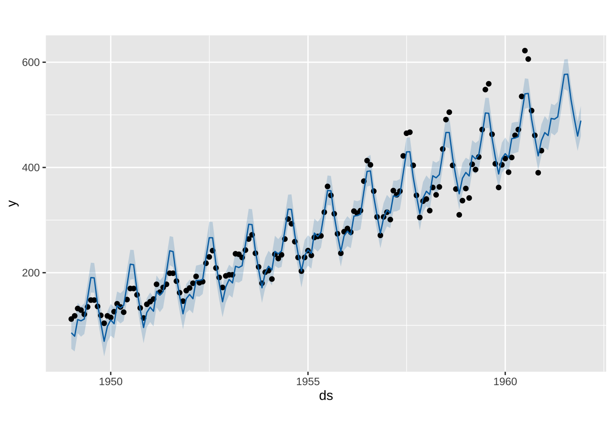
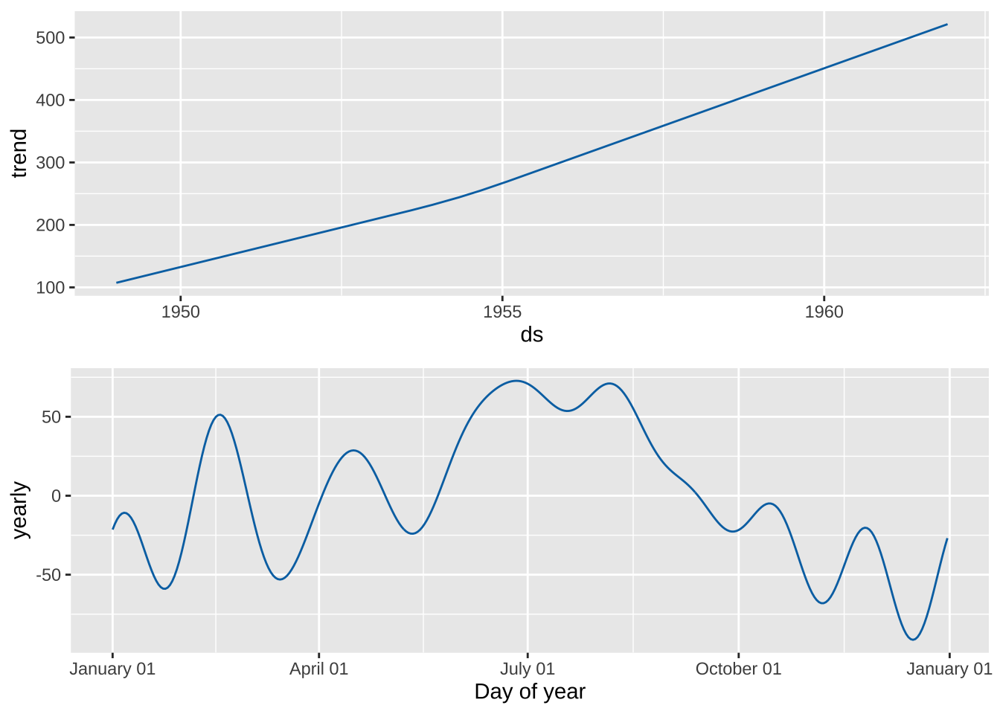
prophetの主な引数
- growth: "linear"(デフォルト), "logisitc", "flat"
- changepoints (変化点): 日付ベクトルをユーザー指定 or 潜在的な変化点の自動選択(デフォルト)
- n.changepoints (変化点の数): 25 (デフォルト)
- yearly.seasonality (年次季節性への適合): "auto"(デフォルト), T, F, 生成するFourier項の数
- weekly.seasonality (週次季節性への適合): 同上
- daily.seasonality (週次季節性への適合): 同上
- holidays (休日の指定): なし(デフォルト
- seasonality.mode (季節性の入り方): "additive"(加法的)(デフォルト), "multiplictive"(乗法的)
等